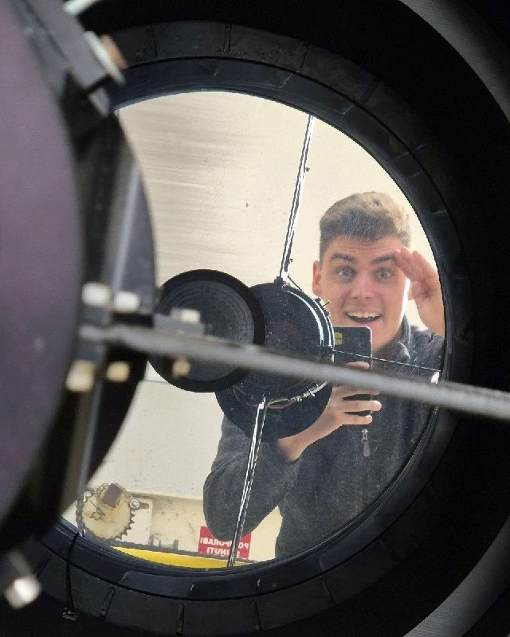

Luka Poropat
Dobro došli! Student sam završne godine diplomskog studija na EFZG-u – Menadžerska informatika. Astronom i specijalist za opažanja u Zvjezdarnici Višnjan u Istri, gdje sam specijaliziran za upravljanje astronomskim zvjezdarnicama i njihovo puštanje u rad te koordiniram projekte. Većinu noći provodim uz teleskop promjera 1,0 m (f/2,9) na Tičanu (kod Centra za male planete L01), gdje potvrđujem netom otkrivene objekte blizu Zemlje (NEO) s popisa za potvrdu Centra za male planete i, zajedno s Koradom Korlevićem, suotkrivam nove. Dana 1. srpnja 2025. naša su opažanja ušla u okružnicu o otkriću 3I/ATLAS-a, tek trećeg ikad pronađenog međuzvjezdanog objekta.
Danju razvijam novi softver, programiram robotske zvjezdarnice i bavim se edukacijom. U 2026. bio sam i mentor studentima Sveučilišta Washington (University of Washington) tijekom njihova studijskog boravka u Višnjanu, a zajedno smo radili na projektima razvoja sljedeće potpuno daljinski upravljane robotske zvjezdarnice za kolegij opažačke astronomije Odsjeka za astronomiju Sveučilišta Washington.
Izvan opažačkog rasporeda bavim se i astrofotografijom dubokog svemira, od jednostavnog DSLR-a s objektivom do snimaka s dugim ukupnim vremenom ekspozicije s robotskom zvjezdarnicom.
Pročitajte više o mom istraživanju, proletite kroz 3D kartu svih asteroida i kometa koje sam opazio, pregledajte moje publikacije ili pogledajte galeriju astrofotografija.
